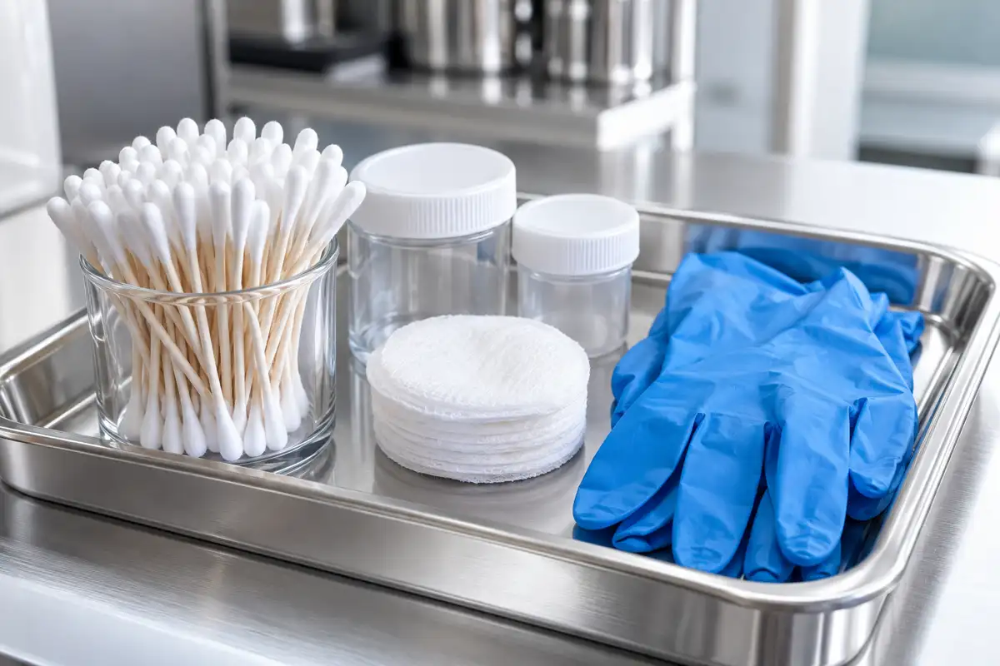

현재 확인
담당자 질문에서 검사 결과를 확인하는 순서를 살피며 최근의 생활 습관과 컨디션을 돌아보면 어떤 질문부터 확인해야 하는지 자연스럽게 우선순위를 세울 수 있습니다.
담당자 질문 기록으로 검사 결과를 확인하는 순서에 관해 현재 상황과 기대하는 변화를 함께 정리합니다.
담당자 질문에서 검사 결과를 확인하는 순서를 살피며 최근의 생활 습관과 컨디션을 돌아보면 어떤 질문부터 확인해야 하는지 자연스럽게 우선순위를 세울 수 있습니다.
담당자 질문에 검사 결과를 확인하는 순서에 필요한 질문으로 한 번의 확인으로 모든 변화가 결정되는 것은 아니므로 다음 방문이나 연락 시점, 기록할 항목을 미리 합의해 둡니다.
담당자 질문 뒤에 검사 결과를 확인하는 순서를 정리한 뒤 현재의 선택을 존중하면서도 필요할 때 계획을 조정할 수 있도록 기준과 연락 방법을 함께 확인해 두는 것이 좋습니다.
게시글에 안내된 준비 사항과 적용 범위는 작성일을 확인하고, 개인별 일정은 담당자에게 문의하세요.
담당자 질문에 남은 질문은 검사 결과를 확인하는 순서에 맞춰 메모해 두었다가 본인의 생활과 상담에서 확인할 내용을 준비해 주세요.
온라인 상담 시작공지의 게시일과 대상, 적용되는 기간을 먼저 확인합니다. 제목만 읽기보다 본문에 적힌 준비 사항을 함께 살핍니다.
센터 이용에 필요한 변경 사항은 방문 일정과 연결해 기록합니다. 이해되지 않는 표현은 문의할 때 그대로 적어 두면 좋습니다.
행사나 안내의 조건은 사람마다 다를 수 있습니다. 개인 상황에 적용하기 전 상담 창구에서 다시 확인합니다.
관련된 연구와 프로그램 안내는 서로 다른 목적을 가질 수 있습니다. 한 문서의 내용을 다른 절차에 그대로 옮기지 않습니다.
공지에서 확인한 내용을 가족이나 동행자와 공유하고 방문 전에 필요한 준비를 마칩니다.
담당자 질문의 메모를 기준으로 현재 생활 리듬과 다음 확인 순서를 상담에서 함께 살펴봅니다.
담당자 질문에서 상담 안내를 다음 상담의 메모로 이어 갑니다.
